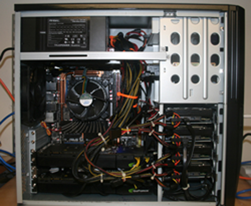
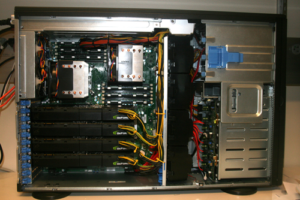

FREALIGN is a program developed by Niko Grigorieff laboratory for high-resolution refinement of 3D reconstruction from cryoEM of single particles. We have modified the original FREALIGN (version v8.06) to run on GPU processors so that the refinement process of single particle 3D reconstruction can be speedup. All the algorithms from the original FREALIGN are kept unchanged. For detailed description of original FREALIGN, please refer to the FREALIGN website.
The current GPU-enabled FREALIGN was written by Xueming Li at Yifan Cheng laboratory, UCSF. Same as the original FRELIGN, the GPU-enabled FREALIGN is available for download and licensed under the terms of the GNU Public License version 3 (GPLv3).
GeFREALIGNv8.06.tar.gz
Features:
1) GPU enabled. All functions of the FREALIGN are now carried out on NVIDIA GPUs.
2) Multithread embedded. The number of available GPU is detected automatically, and then corresponding CPU threads will be created to use all the available GPUs.
System requirements:
1) At least two NVIDIA GPUs (required by the reconstruction). NVIDIA GeForce GTX295 or better is recommended.
2) Linux operating system.
3) CUDA driver v190.* or newer, CUDA toolkit v2.3 or newer. For CUDA installation package and documents, please visit NVIDIA CUDA website: http://www.nvidia.com/cuda
Compile:
1) Uncompress the GeFREALIGNv8.tar package.
2) Make sure that g77, CUDA toolkit and gcc have been installed. The current CUDA toolkit v2.3 doesn't support gcc 4.4 or newer version. If your gcc version is higher than 4.3, you need to install a lower version (gcc 3.4 is recommended), and specify the gcc path by adding the nvcc compiling option into "Makefile" in both src_ref and src_rec folders:
"--compiler-bindir gccpath/bin " .
3) run "make" in both src_ref and src_rec folders, respectively. The binary executable files will be output to ../bin/.
Notes:
1) It is strongly recommended that the graphic card used GPU computing by FREALIGN does not connect to any monitor. CUDA has a 5 sec executing time limit and the GPU connected to a monitor may be unstable.
2) The box size of particle images should be smaller than 500 pixels.
3) The original FREALIGN integrates both alignment and reconstruction into a single executable file. In the current GPU version of FREALIGN, the two functions are separated and compiled into two separate executable files. The source codes are kept in two separate folders: src_ref and src_rec. Otherwise, the usage of the GPU-enabled FREALIGN is exactly same as the original FREALIGN.
4) Because the multithread processing has been embedded, a single FREALIGN process will occupy all the available GPU resources in one computer. So each computer or cluster node can run only one FREALIGN job.
Configurations of our GPU computer systems:
Desktop computer:
Motherboard: Asus P6TD Deluxe, Intel X58 chipset with 6 DIMMs (max 24GB)
CPU: Intel Core i7 920
RAM: 12GB DDR3-1333
GPU: 2 x Nvidia GTX 295 with 1792MB DDR3 (total 4 GPU processors)
Video card: 1 x Nvidia GF 8400GS with 512MB PCI Video card (for display)
HD (RAID5): 4 x Western Digital RE3 WD1002FBYS 1TB HDD
HD (system): 1 x Western Digital Caviar Blue WD3200AAKS 320GB HDD
Operating system: Fedora Core 11
Vendor: Xxera (total cost is ~$4,000 in the fall of 2009).

Cluster computer 1 (Rackmount 4U):
Motherboard: Supermicro SuperServer 7046GT-TRF. Display is connected to the onboard VGA port.
CPU: 2 x Intel Xeon X5550
RAM: 24GB DDR3-1333
GPU: 4 x Nvidia GTX 295 with 1792MB DDR3 (total 8 GPU processors)
Operating system: Centos 5.3
Vendor: Xxera (total cost is ~$8,000 in the fall of 2009).

Cluster computer 2 (Rockmount 2U + 2U)
Headnode: Calfax CX2280-X3 2U Rackmount Server
Motherboard: Asus DSEB-DG
CPU: Intel Xeon Quad Core E5345
RAM: 32GB DDR3
GPU: nVidia Tesla S1070-500 system (Total 4 Tesla GPU processors)
Operating system: Suse 2.6 |